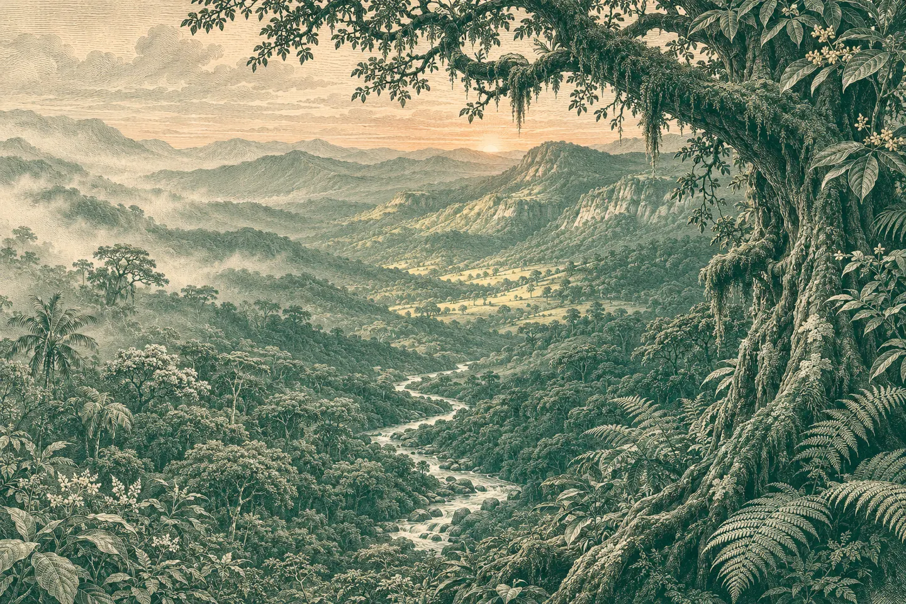
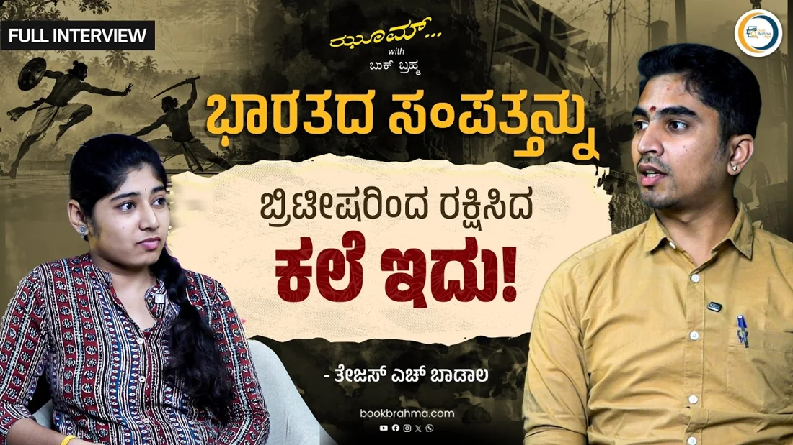

Historical fiction · Kannada
Araṇyani
My novel follows resistance to British rule in the forests of the Western Ghats.
About the bookತೇಜಸ್ ಎಚ್ ಬಾಡಾಲ
I write Kannada fiction and study intellectual property and technology law at RV University, Bengaluru.



Historical fiction · Kannada
My novel follows resistance to British rule in the forests of the Western Ghats.
About the book
Featured interview · Kannada
ಭಾರತದ ಸಂಪತ್ತನ್ನು ಬ್ರಿಟೀಷರಿಂದ ರಕ್ಷಿಸುವಂತೆ ಮಾಡಿದ ಕಲೆ ಇದು!
Watch on YouTube →Mysuru · Bengaluru